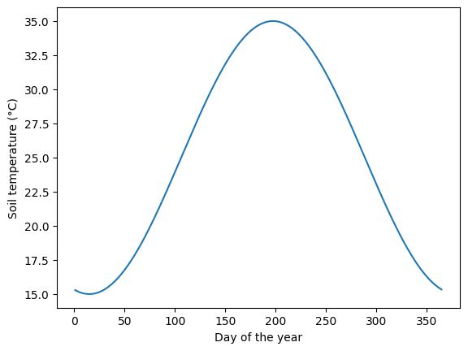
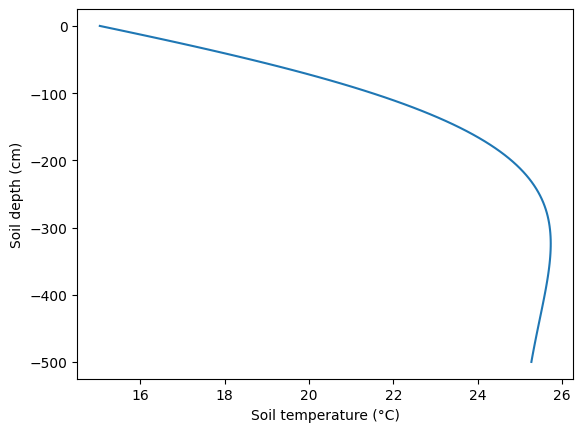
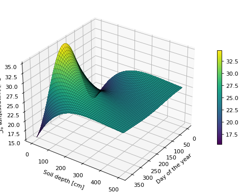

# Import modules
import numpy as np
import math
import matplotlib.pyplot as plt
from mpl_toolkits.mplot3d import Axes3D70 Soil temperature model
Keywords
soil temperature, heat transport, damping depth, model
Soil temperature is one of those variables that follow the theory closely. In this exercise we will implement an analytical solution of the heat conduction-diffusion equation. The model is simple and accounts for soil temperature in time and soil depth. This model is robust enough to be used for research.
The model states that the annual mean temperature at all soil depths is the same. At increasing depths the thermal amplitude decreases and the timing of maximum and minimum temperatures experience a delay. This makes sense since it takes time for heat to move from the surface to deeper layers and the thermal fluctuations are higher near the surface than at depth as a consequence of heat losses primarily due to radiation and convection.
Model
T(z,t) = T_{avg} + A \ e^{-z/d} \ \sin(\omega t - z/d - \phi)
T is the soil temperature at time t and depth z
z is the soil depth in cm
t is the time in days of year
T_{avg} is the annual average temperature at the soil surface
A is the thermal amplitude: (T_{max} - T_{min})/2.
\omega is the angular frequency: 2\pi / P
P is the period. Should be in the same units as t. The period is 365 days for annual oscillations and 24 hours for daily oscillations.
\phi is the phase constant, which is defined as: \frac{\pi}{2} + \omega t_0
t_0 is the time lag from an arbitrary starting point. In this case, it is the number of days from January 1.
d is the damping depth, which is defined as: \sqrt{(2 D/ \omega)}. It has the same length units as z (cm).
D is thermal diffusivity in cm^2 d^{-1}. The thermal diffusivity is defined as \kappa / C
\kappa is the soil thermal conductivity in J cm^{-1} K^{-1} d^{-1}
C is the soil volumetric heat capacity in J cm^{-3} K^{-1}
Assumptions
Constant soil thermal diffusivity.
Uniform soil texture
Temperature in deep layers approximates the mean annual air temperature
In situations where we don’t have observations of soil temperature at the surface we also assume that the soil surface temperature is equal to the air temperature.
Model inputs
# Constants
T_avg = 25 # Annual average temperature at the soil surface
A0 = 10 # Annual thermal amplitude at the soil surface
D = 0.203 # Thermal diffusivity obtained from KD2 Pro instrument [mm^2/s]
D = D / 100 * 86400 # convert to cm^2/day
period = 365 # days
omega = 2*np.pi/period
t_0 = 15 # Time lag in days from January 1
phi = np.pi/2 + omega*t_0 # Phase constant
d = (2*D/omega)**(1/2) # Damping depth
D175.39200000000002Define model
# Define model as lambda function
T_soilfn = lambda doy,z: T_avg + A0 * np.exp(-z/d) * np.sin(omega*doy - z/d - phi)Soil temperature for a specific depth as a function of time
doy = np.arange(1,366)
z = 0
T_soil = T_soilfn(doy,z)
# Plot
plt.figure()
plt.plot(doy,T_soil)
plt.xlabel('Day of the year')
plt.ylabel(f'Soil temperature ({chr(176)}C)')
plt.show()
Soil temperature for a specific day of the year as a function of depth
doy = 10
Nz = 100 # Number of interpolation
zmax = 500 # cm
z = np.linspace(0,zmax,Nz)
T = T_soilfn(doy,z)
plt.figure()
plt.plot(T,-z)
plt.xlabel(f'Soil temperature ({chr(176)}C)')
plt.ylabel('Soil depth (cm)')
plt.show()
Soil temperature as a function of both DOY and depth
doy = np.arange(1,366)
z = np.linspace(0,500,1000)
doy_grid,z_grid = np.meshgrid(doy,z)
# Predict soil temperature for each grid
T_grid = T_soilfn(doy_grid,z_grid)
# Create figure
fig = plt.figure(figsize=(10, 6), dpi=80) # 10 inch by 6 inch dpi = dots per inch
# Get figure axes and convert it to a 3D projection
ax = fig.add_subplot(projection='3d')
# Add surface plot to axes. Save this surface plot in a variable
surf = ax.plot_surface(doy_grid, z_grid, T_grid, cmap='viridis', antialiased=False)
# Add colorbar to figure based on ranges in the surf map.
fig.colorbar(surf, shrink=0.5, aspect=20)
# Wire mesh
frame = surf = ax.plot_wireframe(doy_grid, z_grid, T_grid, linewidth=0.5, color='k', alpha=0.5)
# Label x,y, and z axis
ax.set_xlabel("Day of the year")
ax.set_ylabel('Soil depth [cm]')
ax.set_zlabel('Soil temperature \N{DEGREE SIGN}C')
# Set position of the 3D plot
ax.view_init(elev=30, azim=35) # elevation and azimuth. Change their value to see what happens.
plt.show()
References
Wu, J. and Nofziger, D.L., 1999. Incorporating temperature effects on pesticide degradation into a management model. Journal of Environmental Quality, 28(1), pp.92-100.